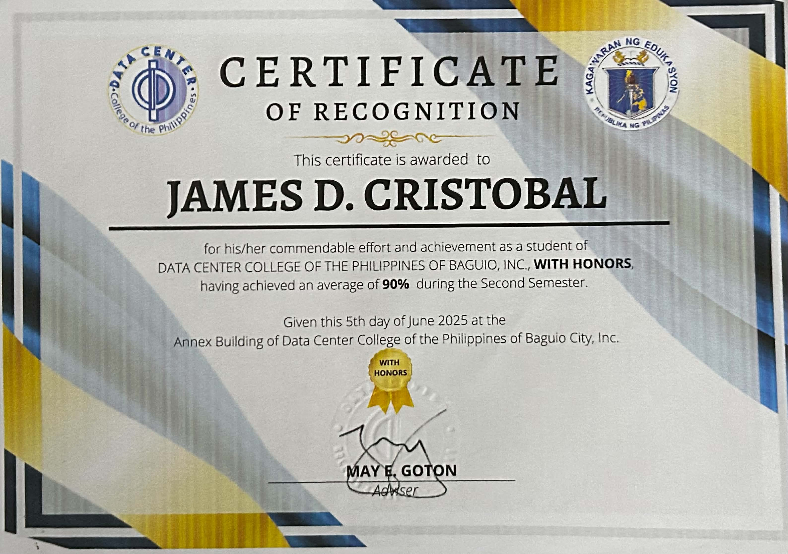
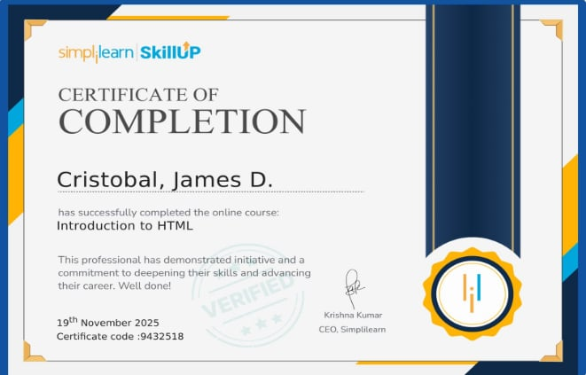
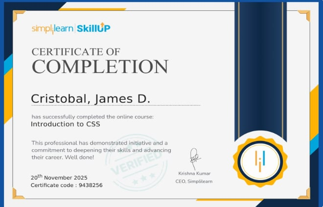

Achievements

Senior High Certificate of Recognition
This is my Certificate of Recognition from Data Center College Of The Philippines while taking TVL-ICT Track, awarded to me in recognition of my hard work, dedication, and achievements throughout my academic journey.
Work Immersion
I received this Certificate of Completion from my Work Immersion at Benguet State University, where I gained hands-on experience in troubleshooting, repairing network cables, and configuring servers. This experience helped me develop my technical skills and deepen my understanding of networking and IT operations.

HTML Online Course
This is my Certificate of Completion for an online HTML course, where I learned the fundamentals of HTML and how to structure and create web pages. This course helped me develop my skills in building websites.

CSS Online Course
This is my Certificate of Completion for an online CSS course, where I learned how to style web pages, customize layouts, and improve website designs. This course enhanced my creativity and front-end development skills.